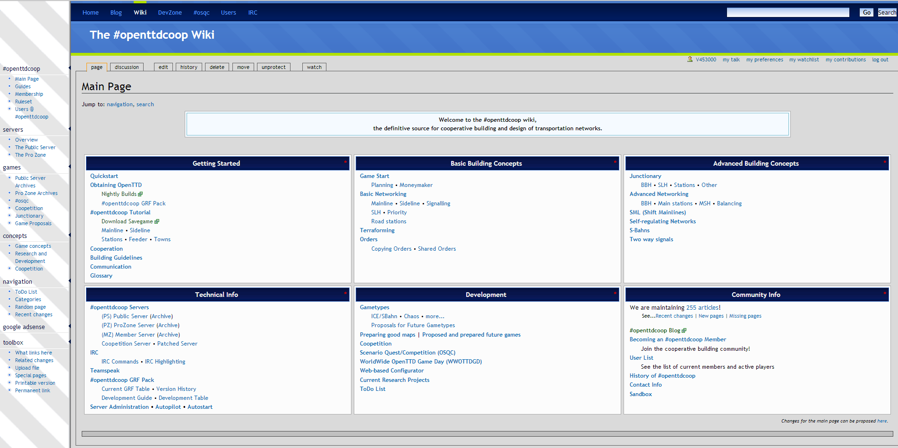

Wiki upgrades and list of things to be done
Hello!
As our community is finding out what to do in the game, our building style, complexity of it and aims change. Due to all that, many parts of the wiki are outdated, or need some extending for the newer ideas. I have made some plans what could be improved and how exactly, which I will put and discuss in this article. It is not how it has to be, but it is my general idea how the wiki should be cleaned up in order to gain some better quality. I am writing this here for easier access for you to see what needs doing, if you want to help. 

1. Main page – Development category
First thing that hit me in the eyes was Gametype: categories. Most of these links do not say almost anything, or are too specific about the gametype. Nowadays we do not specify which wagons and what TL does a gametype have, that is up to the plan. Therefore I would simply create new Gametype categories page under Basic Concepts, working as a menu for concepts – those being:
Cargo
A page about general ideas of Cargo games – a very short page probably
PAX
A page which contains both TGV and ICE concepts described, and adds general info about the purpose and aims of Sbahn (not how Sbahn is built, that can link to ABR05 for now, eventually to a full-fledged Sbahn wiki article later)
Chaos
There are like 3 “chaos” gametype categories like b2b, another b2b and chaos itself. Those should all be unified under one category of Chaos – this page should say the possibilities which can be done and what different kinds chaos can have – like what is specified by plan and what is not (ML layout, drop locations, train length/engines, etc.
The following three are mainly concepts for specific constructions, but they influence the game so majorly that they should be linked to from the Gametype page.
SRNW
An already existing page – basic concept, updates, links to games – all on general basis, with SRNW stations being in the junctionary
Refit
A new page which shows the idea and basic concept of Refit games, links to all refit games in the past while describing the key features, just like SRNW page does now
SML
There is an old SML page which needs vast simplification and redoing, eventually links to games and showing what kinds of shifters there are (like the psg172 failsafe ones vs. the older kinds). There should be no info about the “development” of the idea from the very start, just a description of what it does, how it affects the network and what kinds there are – with links to games
Following in the Development category, Preparing good maps should probably be a link to the Creating Maps blog article, eventually with some most important basic hints on the wiki-page itself. This page should also be moved elsewhere, probably to Technical info near servers or Community info.
One of the biggest mess is the Current research projects which are under Development category, too. First of all, I think that systematically the whole wiki should be one big Current research projects – example, srnw page has all the updates about every bit that has been done, filling the role of “current research” as well. Same for other pages. Secondly, most of the Research things are rather pointless. Breakdowns page or 4-levels as an example could be removed entirely. Only 3 things I would work with from this category are:
Station Cache
(today called Overflows – create new page of that name) – here should be general purpose of overflows and their use, at least for now linking to ABR 04,08 and 12.
PreSignal Bypass
– despite this signalling technique is not used today, it can have its usage and the concept had quite some usage in the past. Therefore there should be some page for it, but with addition of showing why/when it is conceptually wrong, and when it is safe to use it.
Implicit load balancing
– this article is just a description of one specific station exit concept. The idea is useful and should probably be at least mentioned in the Junctionary under stations. The description area in junctionary should be big enough to describe this simple concept.
osqc and wottdgd pages were just events which are pretty much useless today so their place should be in some archive, same as some concept-stage page about web based config manager.
With all that, I suggest creating new pages in the destinations I mentioned near each entity I described above, leaving the Development category unattended. When all of these articles I mentioned are written, we can move that whole category in an archive altogether.
2. #openttdcoop Tutorial
Where else do you get more confused than when you are a starter? In an outdated tutorial. The tutorial savegame should be re-created, probably just by having a simple game on the nowadays public ProZone where would be created a new tutorial with updated hints and such. This could even include extremely basic instances of srnw/refit/overflow or anything similar, just to show the very basic concept for the starters so they could orientate in such features in actual games.
http://wiki.openttdcoop.org/Guides:Building This page should be merged with tutorial, not to have 2 different basic guides.
All the starter/basic information must be accessible straight from the main page – under either Getting Started or Basic Building Concepts. Mainly talking about this page http://wiki.openttdcoop.org/Guides – most of the things are re-linked from the main page already. Having 2 such menus is a mess.
For example SL load balancers without waiting bays, terraforming info and rather pointless details about stations should either be specified, or added links from junctionary, or somehow else fixed.
Note that this is not just creating the savegame but also re-writing the pages related to it, along with the numbered sign system in the savegame. This is up to discussion in the eventual game.
3. the general chaos of pages
There are many pages which are massively outdated and could use some improvements. It is hard to specify them all because there is many of them, or it could be just some little bits of info being wrong. Please edit pages upon seeing that they are wrong or miss something, eventually best with discussing it in IRC of course.
4. specific new pages about “new” or undescribed concepts
Logic
For example Logic gates and general article about logic would be very nice to have, probably mainly a detailed description of main gates we use, with their usage and so on. With links to junctionary which logic mechanisms do we have.
PBS->2way
Also techniques like making PBS towards 2way signal kind of choice could use some love. like http://wiki.openttdcoop.org/File:Psg216_coaldrop.png this station exit
And any other techniques you can think of, most of them probably directly under Advanced Building Concepts.
5. User list
Do not forget to add yourself to the Usual suspects list!
http://wiki.openttdcoop.org/Community:Members
Conclusion
With all this, I would like to invite you to take your part in making our wiki better, making it less confusing and easier to learn from – by having less misleading information and more updated pages on each topic. Also note that these systematic changes to the wiki are just my vision how to do it; if you have better ideas, please note them in the comments to this article so we have an unified place where discussion about wiki changes takes place. We generally keep saying that the wiki is sub-ideal, but lets do something about it.
Categories: Community News, Wiki
KenjiE20 December 8, 2012 13:33
Also do not forget we have the review/testing wiki for building the larger sets of pages in a sandbox, and a .wiki IRC channel for co-ordination. Feel free to use those to aid in this.